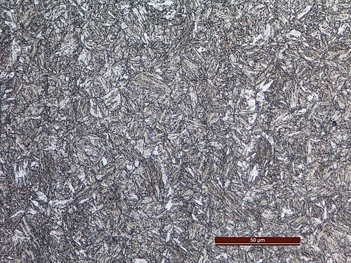

Vue schématique calculée par le modèle : ce n’est pas une micrographie.
👆 Glisse le curseur orange le long du cycle, ou lance la lecture.
Le modèle est semi-quantitatif : des lois physiques simples, calées sur des valeurs publiées pour un alliage de référence. Les chiffres sont des ordres de grandeur, pas des valeurs de calcul. Les vues sont des schémas, pas des micrographies.
Les photographies de la banque sont, elles, de vraies micrographies, pièces ou installations : leur légende, leur auteur et leur licence sont donnés dans « En savoir plus » et sous chaque carte.
Clavier : flèches = temps, Pg↑/Pg↓ = étapes, Début/Fin, Espace = lecture, + et − = échelle.
Ce laboratoire a besoin de JavaScript. Les cours du wiki restent accessibles depuis le menu.